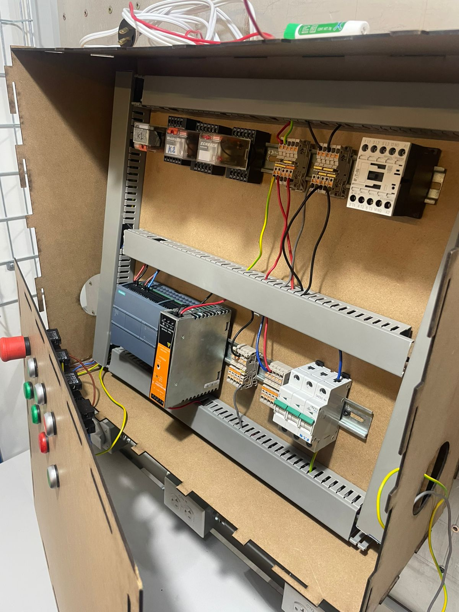

Práctica 7: PLC
Objetivo
Conocer, investigar e identificar el funcionamiento de un PLC.
Introducción
Los Controladores Lógicos Programables (PLCs) son dispositivos clave en la automatización industrial, utilizados para controlar y monitorear equipos y procesos mediante la ejecución de instrucciones preprogramadas. Surgieron como una alternativa a los antiguos sistemas de relevadores, ofreciendo una solución flexible, resistente y fácil de programar, ideal para los entornos industriales. Hoy en día, los PLCs desempeñan un papel fundamental en la modernización de la industria, con aplicaciones que van desde el control de líneas de producción hasta sistemas de transporte y empaquetado.
Materiales
- Fuente de alimentacion
- Botones
- LED's
- Contactos
- Relevadores
- Motor
Desarrollo
Armado de manera fisica
Reportes de practica
Descargar PDF del reporte de Practica 7
Conclusiones
La incorporación de PLCs en los sistemas de automatización industrial ha revolucionado el control de procesos, proporcionando flexibilidad, eficiencia y seguridad en múltiples sectores. A través de su capacidad de programación, facilidad de adaptación y resistencia a entornos industriales, los PLCs permiten una gestión precisa y continua de operaciones complejas, optimizando los recursos y reduciendo tiempos de producción. Los avances tecnológicos, como la integración con el Internet de las Cosas Industrial (IIoT) y la Industria 4.0, han ampliado aún más su potencial, permitiendo la supervisión y el análisis de datos en tiempo real. A pesar de algunos desafíos, como los costos iniciales y la necesidad de personal capacitado, los PLCs representan una herramienta indispensable en la modernización de la industria, cumpliendo un papel esencial en el camino hacia una producción automatizada, conectada y eficiente.
Volver a inicio